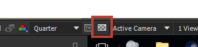
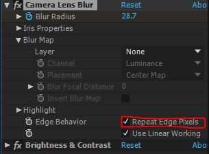

Sometimes effects just doesn't fill up whole comp, so they need to be expanded by Grow Bounds.
ALT + SHIFT + property.
property \(\in\) \(\{\) pos, rot, scale, … \(\}\)For transparent backgrounds in comps use: 
When blurring, you don't want to those edges that are blurred to making blue box with white blurred borders. Just check: 
For keyframe scaling, drag the keyframes at the opposite side of CTI while holding down alt key.